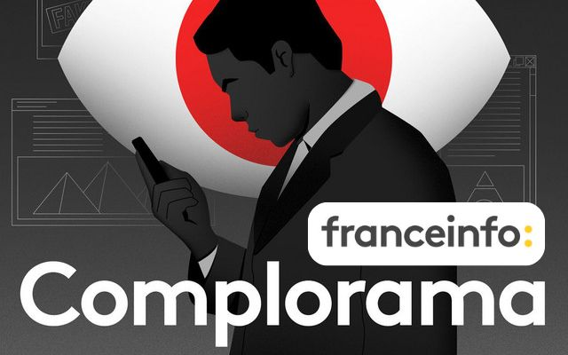
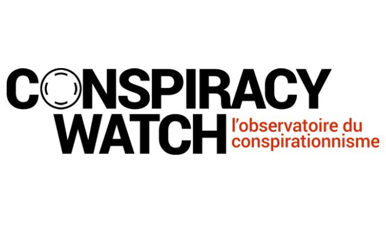
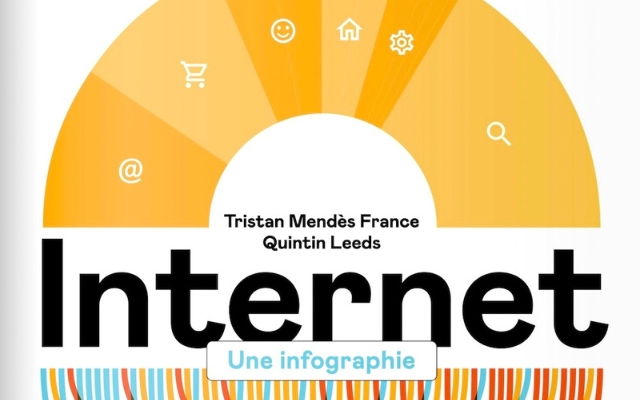
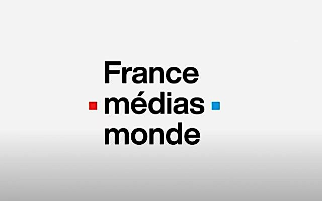
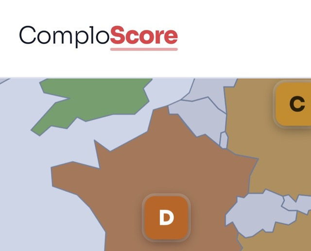
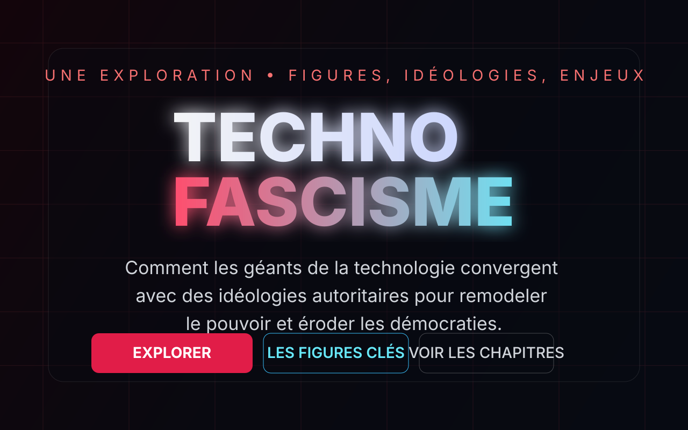
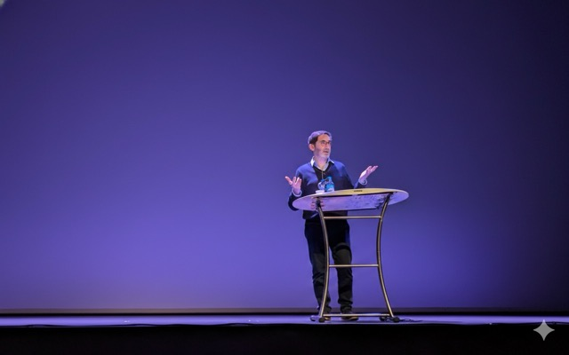

Podcast
Complorama
Co-producteur de ce podcast France Info qui explore les dynamiques du complotisme.
Écouter →Je travaille sur la façon dont le numérique transforme l’information, la démocratie et les formes contemporaines de radicalité.

Maître de conférences associé en cultures numériques à l’Université Paris Cité et enseignant au CELSA, je suis spécialiste des cultures numériques et des radicalités en ligne. Je coanime le podcast « Complorama » (France Info), collabore à Conspiracy Watch et participe à l’émission « Les Vérificateurs » (LCI).

Co-producteur de ce podcast France Info qui explore les dynamiques du complotisme.
Écouter →

Ouvrage aux éditions CNRS, sur l'impact du numérique.
Voir le livre →
Membre du Comité d’indépendance et intégrité de France Médias Monde.
En savoir plus →Chroniqueur dans la matinale de France Inter (2020-2022) analysant l’actualité de la complosphère.
Découvrir →
Un nutri-score du complotisme sous forme de carte interactive pour visualiser les niveaux de conspirationnisme par pays.
Explorer →
Une exploration visuelle des figures, idéologies et enjeux du technofascisme contemporain.
Explorer →
J'interviens sur les innovations numériques, la désinformation et les radicalités en ligne.
Me contacter pour une intervention.